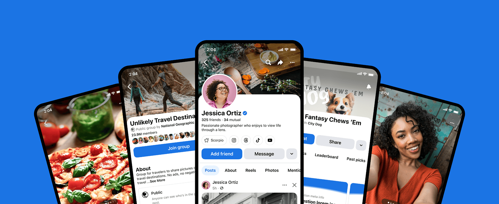

Staff Product Designer / Systems thinker
Beyondtheinterface.
I turn complexity into products, platforms, and ways of working that create meaningful progress.
Explore the workMeta / Systems at scaleGood design.
Good design.
At scale.
Building the foundations and shared ways of working that help teams create cohesive product experiences.
Explore project
Citi / Global platformOne foundation.
One foundation.
Many futures.
Turning varied product experiences into a shared language across teams, platforms, and markets.
Explore project
Feelmore Labs / Zero-to-one productTechnology
Technology
that feels.
Taking an unfamiliar wellness device from early concept into an approachable everyday experience.
Explore projectAI-ready systems / Structured design intelligenceMake systems
Make systems
thinkable.
Turning design guidance into portable structured knowledge for AI-assisted workflows across teams and tools.
Explore project
Beyond the artifact / How I lead
The bestwork keepsworking.
Strong design changes what teams can do next. It makes good decisions easier, builds shared understanding, and compounds after the original project is finished.